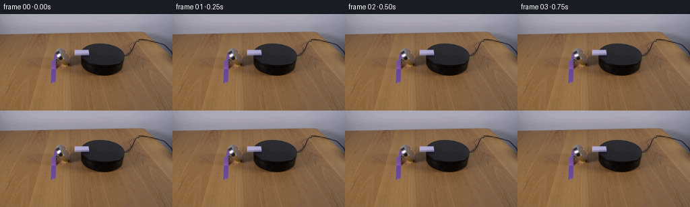
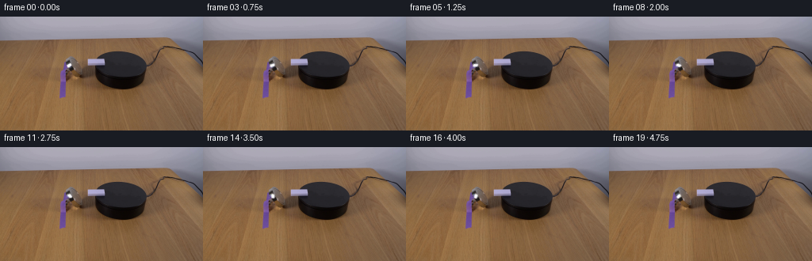

CODING AGENTS AS PIXEL WORLD MODELS
traex/GPT-6.1-Sol · 0095
点击播放 · 原生 RGB 像素
逐轮保存的候选
回放视频、检查图与代码变化。
每份候选均可单独播放。实际图片检查记录在下方工具轨迹中。
候选 01播放与检查图
点击播放 · 原生 RGB 像素

展开代码变化
--- 上一保存版本
+++ 本次保存版本
@@ -0,0 +1,72 @@
+from pathlib import Path
+
+import cv2
+import numpy as np
+from PIL import Image
+
+import artifact_io
+
+
+def generate(case_dir):
+ case_dir = Path(case_dir)
+ original = np.asarray(Image.open(case_dir / 'first_frame.png').convert('RGB'))
+
+ # Separate the little white piece and its soft edge from the stationary
+ # apparatus. All coordinates are in the original, locked camera frame.
+ removal = np.zeros((144, 256), np.uint8)
+ outline = np.array([[88, 58], [90, 60], [91, 62], [88, 65],
+ [85, 65], [83, 62], [85, 60]], np.int32)
+ cv2.fillConvexPoly(removal, outline, 255)
+ clean = cv2.inpaint(original, removal, 3, cv2.INPAINT_TELEA)
+
+ # Retain the actual photographic colors, highlight, and edge softness of
+ # the plastic rather than replacing it with a painted white rectangle.
+ x0, y0, x1, y1 = 79, 54, 97, 70
+ src = original[y0:y1, x0:x1].astype(np.float32)
+ bg = clean[y0:y1, x0:x1].astype(np.float32)
+ delta = (src - bg).mean(axis=2)
+ light = bg.mean(axis=2)
+ opacity = np.where(delta >= 0,
+ delta / np.maximum(254 - light, 1),
+ -delta / np.maximum(light, 1))
+ opacity = np.clip(opacity, 0, 1).astype(np.float32)
+ opacity *= (removal[y0:y1, x0:x1] > 0)
+ pigment = src - bg * (1 - opacity[..., None])
+ pigment[opacity == 0] = 0
+
+ scale = 8
+ size = ((x1 - x0) * scale, (y1 - y0) * scale)
+ alpha_hi = cv2.resize(opacity, size, interpolation=cv2.INTER_LINEAR)
+ color_hi = cv2.resize(pigment, size, interpolation=cv2.INTER_LINEAR)
+ pivot = np.array([(87.15 - x0 + .5) * scale - .5,
+ (61.5 - y0 + .5) * scale - .5])
+ plane = np.diag([1.0, .86])
+
+ frames = [original.copy()]
+ for i in range(1, 20):
+ t = i / 4.0
+ # A gentle start followed by clockwise rotation on the supporting
+ # surface; the piece stays at its original location near the magnet.
+ angle = np.deg2rad(38 * (t - .20 * (1 - np.exp(-t / .20))))
+ c, s = np.cos(angle), np.sin(angle)
+ rotation = np.array([[c, -s], [s, c]])
+ projected = plane @ rotation @ np.linalg.inv(plane)
+ transform = np.column_stack((projected, pivot - projected @ pivot))
+ a = cv2.warpAffine(alpha_hi, transform, size,
+ flags=cv2.INTER_LINEAR, borderMode=cv2.BORDER_CONSTANT)
+ p = cv2.warpAffine(color_hi, transform, size,
+ flags=cv2.INTER_LINEAR, borderMode=cv2.BORDER_CONSTANT)
+ a = cv2.resize(a, (x1 - x0, y1 - y0), interpolation=cv2.INTER_AREA)
+ p = cv2.resize(p, (x1 - x0, y1 - y0), interpolation=cv2.INTER_AREA)
+ frame = clean.copy()
+ frame[y0:y1, x0:x1] = np.clip(
+ bg * (1 - a[..., None]) + p, 0, 255).round().astype(np.uint8)
+ frames.append(frame)
+
+ frames = np.stack(frames).astype(np.uint8)
+ np.save(case_dir / '.tmp' / 'generated_candidate.npy', frames)
+ artifact_io.save(frames, case_dir)
+
+
+if __name__ == '__main__':
+ generate(Path(__file__).resolve().parent)
候选 02播放与检查图
点击播放 · 原生 RGB 像素

展开代码变化
--- 上一保存版本
+++ 本次保存版本
@@ -9,6 +9,7 @@
def generate(case_dir):
case_dir = Path(case_dir)
+ (case_dir / '.tmp').mkdir(exist_ok=True)
original = np.asarray(Image.open(case_dir / 'first_frame.png').convert('RGB'))
# Separate the little white piece and its soft edge from the stationary
@@ -36,8 +37,8 @@
scale = 8
size = ((x1 - x0) * scale, (y1 - y0) * scale)
- alpha_hi = cv2.resize(opacity, size, interpolation=cv2.INTER_LINEAR)
- color_hi = cv2.resize(pigment, size, interpolation=cv2.INTER_LINEAR)
+ alpha_hi = cv2.resize(opacity, size, interpolation=cv2.INTER_NEAREST)
+ color_hi = cv2.resize(pigment, size, interpolation=cv2.INTER_NEAREST)
pivot = np.array([(87.15 - x0 + .5) * scale - .5,
(61.5 - y0 + .5) * scale - .5])
plane = np.diag([1.0, .86])
可观测工具轨迹
实际执行的命令与返回图片。
命令 1exit 0
/bin/bash -lc "ls -la && cat prompt.txt && printf '\\n---RULES---\\n' && cat GENERATION_RULES.md"
命令 2exit 0
/bin/bash -lc "cat artifact_io.py && python - <<'PY'
from PIL import Image
import numpy as np
im=np.array(Image.open('first_frame.png'))
print(im.shape)
# ASCII approximated luminance/color every 3x3
for y in range(0,144,3):
s=''
for x in range(0,256,3):
r,g,b=np.mean(im[y:y+3,x:x+3],axis=(0,1))
v=(r+g+b)/3
if r>g*1.25 and r>b*1.25:c='R'
elif b>r*1.25 and b>g*1.1:c='B'
elif g>r*1.2 and g>b*1.2:c='G'
else:c=' .,:;ox%#@'[min(9,int(v/256*10))]
s+=c
print(f'{y:3} {s}')
PY"命令 3exit 0
/bin/bash -lc "python - <<'PY'
import numpy as np
from PIL import Image
im=np.array(Image.open('first_frame.png'))
# detailed hue/lightness map setup, one pixel each
print('Key: 0 <25, 1 <45, 2 <70,3 <100,4 <130,5 <160,6 <190,7 <215,8 <235,9>=235. R warm pixels, B cool')
for y in range(40,86):
s=''
for x in range(66,177):
r,g,b=map(int,im[y,x]); l=(r+g+b)/3
if r>g*1.5 and r>b*1.3 and r>55:c='r'
else:c=str(np.searchsorted([25,45,70,100,130,160,190,215,235],l))
s+=c
print(f'{y:3} {s}')
print('column guide 66'+ ' '*36+'105'+' '*25+'133')
for y in range(48,67):
print(y, ' '.join(f'{x}:{tuple(im[y,x])}' for x in range(104,134,2)))
PY"命令 4exit 1
/bin/bash -lc "python - <<'PY'
import numpy as np
from PIL import Image
im=np.array(Image.open('first_frame.png'))
print('ROI left. H high neutral, digits brightness, R table')
for y in range(45,105):
s=''
for x in range(70,111):
r,g,b=map(int,im[y,x]);l=(r+g+b)/3
if r>1.28*g and r>1.3*b:c='T'
else:c=str(np.searchsorted([25,45,70,100,130,160,190,215,235],l))
s+=c
print(y,s)
print('RGB left white')
for y in range(52,70):
print(y, ' '.join(f'{x}:{tuple(map(int,im[y,x])))}' for x in range(79,96)))
PY"命令 5exit 0
/bin/bash -lc "python - <<'PY'
import numpy as np
from PIL import Image
im=np.array(Image.open('first_frame.png'))
print('ROI left. digits brightness, T table')
for y in range(45,105):
s=''
for x in range(70,111):
r,g,b=map(int,im[y,x]);l=(r+g+b)/3
if r>1.28*g and r>1.3*b:c='T'
else:c=str(np.searchsorted([25,45,70,100,130,160,190,215,235],l))
s+=c
print(y,s)
print('RGB left white')
for y in range(52,70):
print(y, ' '.join(f'{x}:{tuple(map(int,im[y,x]))}' for x in range(79,96)))
PY"命令 6exit 0
/bin/bash -lc "python - <<'PY'
from PIL import Image
import numpy as np
im=np.array(Image.open('first_frame.png')).astype(float)
for y in range(40,98):
s=''
for x in range(95,201):
r,g,b=im[y,x];l=(r+g+b)/3
if b>r+10 and l>100:c='W'
elif r>g+15 and r>b+20:c='.'
elif l<22:c='@'
elif l<35:c='#'
elif l<50:c='X'
elif l<65:c='x'
elif l<85:c=':'
elif l<110:c='o'
elif l<150:c='O'
elif l<180:c='8'
else:c='W'
s+=c
print(f'{y:3} {s}')
print('dark object samples')
for pt in [(150,44),(150,50),(150,60),(150,70),(150,76),(150,77),(150,78),(150,80),(150,83),(150,90),(170,90),(130,80),(140,60),(180,60),(177,55),(183,65),(95,60),(90,80),(78,80)]:
x,y=pt;print(pt,im[y,x])
PY"命令 7exit 0
/bin/bash -lc "python - <<'PY'
import numpy as np
from PIL import Image
im=np.array(Image.open('first_frame.png'))
# neutral luminance detailed 2-digit crop
for y in range(50,72):
print(f'{y:2}', ' '.join(f'{int(np.mean(im[y,x])):3}' for x in range(81,96)))
# color list
print('neutral high (>185) components')
from scipy.ndimage import label
m=(im.min(axis=2)>180)
l,n=label(m)
for i in range(1,n+1):
yy,xx=np.where(l==i)
if len(xx)>2:print(len(xx),(xx.min(),yy.min(),xx.max(),yy.max()),(xx.mean(),yy.mean()))
PY"命令 8exit 0
/bin/bash -lc "python - <<'PY' import importlib.util for name in ['scipy','cv2','PIL']: print(name, bool(importlib.util.find_spec(name))) PY"
命令 9exit 0
/bin/bash -lc "mkdir -p .tmp && python - <<'PY'
import cv2
import numpy as np
from PIL import Image
im=np.array(Image.open('first_frame.png'))
m=np.zeros(im.shape[:2],np.uint8)
cv2.fillConvexPoly(m,np.array([[88,58],[90,60],[91,62],[88,65],[85,65],[83,62],[85,60]],np.int32),255)
bg=cv2.inpaint(im,m,3,cv2.INPAINT_TELEA)
for y in range(58,67):
print(y,'src',' '.join(f'{int(np.mean(im[y,x])):3}' for x in range(83,93)), 'bg',' '.join(f'{int(np.mean(bg[y,x])):3}' for x in range(83,93)))
Image.fromarray(bg).save('.tmp/background_candidate.png')
PY"命令 10exit 0
/bin/bash -lc "python - <<'PY'
import numpy as np
from PIL import Image
im=np.array(Image.open('first_frame.png')).astype(float)
for y in range(43,77):
x=np.arange(113,196);v=im[y,x];ok=(v[:,0]-v[:,1]<10)&(v.mean(1)<62)
good=x[ok]
print(y,good.min() if len(good) else 0,good.max() if len(good) else 0)
PY"命令 11exit 0
/bin/bash -lc "python generate.py && python - <<'PY'
import numpy as np
from PIL import Image
f=np.load('.tmp/generated_candidate.npy')
im=np.array(Image.open('first_frame.png'))
print(f.shape,f.dtype,'first exact',np.array_equal(f[0],im))
for i in [0,1,5,10,15,19]:
print('\\nFRAME',i)
for y in range(56,68):
print(y,''.join(' .,:ox%#@'[min(8,int(v/256*9))] for v in f[i,y,80:96].mean(axis=1)))
print('diff pixels',np.any(f[i]"'!=im,axis=-1).sum())
PY'命令 12exit 0
/bin/bash -lc "python - <<'PY'
import numpy as np
from PIL import Image
f=np.load('.tmp/generated_candidate.npy'); im=f[0]
d=np.abs(f[1].astype(float)-im.astype(float))
print('mean error in crop',d[58:66,83:92].mean(),'max',d.max())
PY"命令 13exit 0
/bin/bash -lc "python generate.py && python - <<'PY'
from pathlib import Path
from PIL import Image
import numpy as np
f=np.load('.tmp/generated_candidate.npy')
assert f.shape==(20,144,256,3) and f.dtype==np.uint8
assert np.array_equal(f[0],np.asarray(Image.open('first_frame.png').convert('RGB')))
a=np.load('pixels.npz')['pixels']
assert a.shape==(144,256,20)
print('Verified 20 RGB frames, 256x144, pixel-identical first frame.')
print('Artifacts:',', '.join(p.name for p in Path('.').iterdir() if p.name in ['pixels.npz','index.html','generate.py','frames']))
PY"保存候选 2 份；完成命令 13 次；可验证图片返回 0 张。原始 API 响应与完整日志保留在本地。